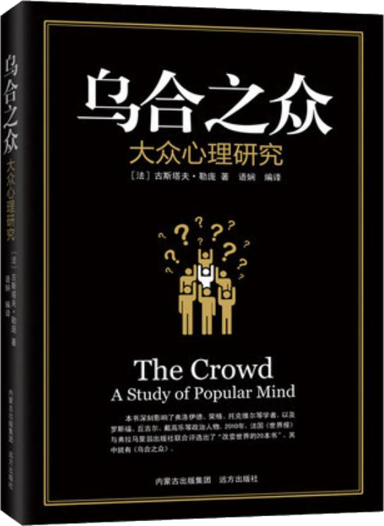

注：【】部分为笔者心得，非原文摘抄。本书中所提到的“群体”多指异质化比较明显的临时社会群体，少部分指专业化或同质化较强的团队。
- 聚集成群的人，他们的感情和思想全都转到同一个方向，他们自觉的个性消失了，形成了一种集体心理。
- 只有环境的单一性，才能造成明显的性格单一性。
- 一切精神结构都包含着各种性格的可能性，环境的突变就会使这种可能性变现出来。
- 心理群体是一个由异质成分组成的暂时现象。
- 在形成一个群体的人群中，并不存在构成因素的总和或它们的平均值。
- 无意识现象不但在有机体的生活中，而且在智力活动中，都发挥着一种完全压倒性的作用。
- 有意识的行为，是主要受遗传影响而造成的无意识的深层心理结构的产物。
- 在属于情感领域的每一种事情上——宗教、政治、道德、爱憎等等，最杰出的人士很少能比凡夫俗子高明多少。
- 群体中累加在一起的只有愚蠢而不是天生的智慧。
- 【大多数人的责任感与所处群体的规模成反比。】
- 在群体中，每种感情和行动都有传染性。
- 通过不同的过程，个人可以被带入一种完全失去人格意识的状态，他对使自己失去人格意识的暗示者唯命是从，会做出一些同他的性格和习惯极为矛盾的举动。
- 有意识人格的消失，无意识人格的得势，思想和感情因暗示和相互传染作用而转向一个共同的方向，以及立刻把暗示的观念转化为行动的倾向，是组成群体的个人所表现出来的主要特点。
- 群体是刺激因素的奴隶。
- 孤立的个人具有主宰自己的反应行为的能力，群体则缺乏这种能力。
- 群体没有能力做任何长远的打算或思考。
- 群体通常总是处在一种期待注意的状态中，因此很容易受人暗示。
- 群体是用形象来思维的，而形象本身又会立刻引起与它毫无逻辑关系的一系列形象。
- 群体很少对主观和客观加以区分。
- 受到最严重怀疑的事件，肯定是那些观察者人数最多的事件。
- 打动群体心灵的是神话中的英雄，而不是一时的真实英雄。
- 英雄的神话因为群体的想象力而改变，使英雄离我们而去，也无需数百年的时间。
- 群体表现出来的感情不管是好是坏，其突出的特点就是极为简单而夸张。
- 群体很容易干出最恶劣的极端勾当。
- 希望感动群体的演说家，必须出言不逊，信誓旦旦。
- 夸大其词、言之凿凿、不断重复、绝对不以说理的方式证明任何事情——这些都是公众集会上的演说家惯用的论说技巧。
- 群体的夸张倾向只作用于感情，对智力不起任何作用。
- 个人一旦成为群体的一员，他的智力立刻会大大下降。
- 专横和偏执是一切类型的群体的共性，但是其强度各有不同。
- 我们从原始时代继承了野蛮和破坏性的本能，它蛰伏在我们每个人的身上。孤立的个人在生活中满足这种本能是很危险的，但是当他加入一个不负责任的群体时，因为很清楚不会受到惩罚，他便会彻底放纵这种本能。
- 私人利益几乎是孤立的个人唯一的行为动机，却很少成为群体的强大动力。
- 从社会的角度看，一种观念的等级价值，它的固有价值并不重要，必须考虑的是它所产生的效果。
- 切莫以为，一种观念会仅仅因为它正确，便至少能在有教养者的头脑中产生作用。
- 当观念通过不同的方式，终于深入到群体的头脑之中并且产生了一系列效果时，和它对抗是徒劳的。
- 群体推理的特点，是把彼此不同，只在表面上相似的事物搅在一起，并且立刻把具体的事物普遍化。
- 既然群体没有思考和推理能力，因此它们不认为世上还有做不到的事情。
- 侵略者的权利和国家的威力，便是建立在群体的想象力上的。
- 所有时代和所有国家的伟大政客，包括最专横的暴君，也都把群众的想象力视为他们权力的基础，他们从来没有设想过通过与它作对而进行统治。
- 掌握了影响群众想象力的艺术，也就掌握了统治他们的艺术。
- 群体并不进行推理，它对观念或是全盘接受，或是完全拒绝；对它产生影响的暗示，会彻底征服它的理解力，并且使它倾向于立刻变成行动。
- 对群体给予恰当的影响，它就会为自己所信奉的理想慷慨赴死。
- 偏执与妄想是宗教感情的必然伴侣。
- 群体的信念有着盲目服从、残忍的偏执以及要求狂热地宣传等等这些宗教感情所固有的特点，因此可以说，他们的一切信念都具有宗教的形式。
- 一切政治、神学或者社会信条，要想在群众中扎根，都必须采取宗教的形式——能够把危险的讨论排除在外的形式。
- 【种族因素对群体的影响最大。】
- 支配着人们的是传统，当他们形成群体时，就更是如此。
- 没有传统，文明是不可能的；没有对这些传统的破坏，进步也是不可能的。
- 如果一个民族使自己的习俗变得过于牢固，它便不会再发生变化。
- 死抱着传统观念不放，极其顽固地反对变革传统观念的，正是群体。有地产的群体更是如此。
- 各种制度是观念、感情和习俗的产物，而观念、感情和习俗并不会随着改写法典而被一并改写。
- 深刻影响群体秉性的手段，不能到制度中去寻找。
- 【要让受众接受一个观点，就要给予他们基于这个观点的想象空间。】
- 词语的威力与它门锁唤醒的形象有关，同时又独立于它们的真实含义。最不明确的词语，有时反而影响最大。
- 词语只是变动不定的暂时含义，它随着时代和民族的不同而不同。因此，我们若想以它们为手段去影响群体，我们必须搞清楚某个时候群体赋予它们的含义，而不是它们过去具有的含义，或精神状态有所不同的个人给予它们的含义。
- 统治者的艺术，就像律师的艺术一样，首先在于驾驭辞藻的学问。
- 自从出现文明以来，群体便一直处在幻觉的影响之下。
- 经验几乎是唯一能够让真理在群众心中牢固生根、让过于危险的幻想归于破灭的有效手段。
- 只要尝试一下用推理来说服原始的头脑即可知道这种论说方式是多么不值钱。
- 一切文明的主要动力并不是理性，而是各种感情——譬如尊严、自我牺牲、宗教信仰、爱国主义以及对荣誉的爱。
- 头领的意志是群体形成意见并取得一致的核心。
- 芸芸众生总是愿意听从意志坚强的人。
- 自己先被一条信条搞得想入非非之后，才能够让别人也想入非非。
- 信仰的建立永远取决于人群中伟大领袖的作用。
- 强大而持久的意志能够成就什么，并不总是能够得到充分的评价。没有任何事情能阻挡住它，无论自然、上帝还是人，都不能。
- 如果想在很短的时间里激发起群体的热情，让他们采取任何性质的行动，就必须让群体对暗示做出迅速的反应，其中效果最大的就是榜样。
- 做出简洁有力的断言，不理睬任何推理和证据，是让某种观念进入群众头脑最可靠的方法之一。
- 一个断言越是简单明了，证据和证明看上去越贫乏，它就越有威力。
- 如果没有不断地重复断言——而且要尽可能措辞不变——它仍不会产生真正的影响。
- 极为重要的修辞法只有一个，那就是重复。
- 群体的意见和信念尤其会因为传染，但绝不会因为推理而得到普及。
- 利用断言、重复和传染进行普及的观念，因环境而获得了巨大的威力，这时它们就会具有一种神奇的力量，即所谓的名望。
- 名望的特点就是阻止我们看到事物的本来面目，让我们的判断力彻底麻木。
- 群众就像个人一样，总是需要对一切事情有现成的意见。这些意见的普遍性与它们是对是错全无关系，它们只受制于名望。
- 各路神仙、英雄豪杰和各种教义，能够在这个世界上大行其道，都是因为各有其深入人心的力量。当然，对他（它）们是不能探讨的，只要一探讨，他（它）们便烟消云散。
- 【个人魅力的培养应该是与为事业成功而奋斗的同时进行，而不是等到成功以后才开始。】
- 个人名望并不是完全以个人的权势、军事业绩或宗教敬畏为基础。它可以有较为平庸的来源，其力量也相当可观。
- 名望是说服群众的一个基本要素。
- 名望的产生与若干因素有关，而其中成功永远是最重要的一个因素。
- 成功是通向名望的主要台阶，其证据就是成功一旦消失，名望几乎也总是随之消失。
- 即使当一种信念已经摇摇欲坠时，根据它建立起来的制度仍会保持其力量，消失得十分缓慢。最后，当信念的余威尽失时，建立于其上的一切很快也会开始衰亡。
- 普遍信念是文明不可缺少的柱石，它们决定着各种思想倾向。只有它们能够激发信仰并形成责任意识。
- 建立普遍信念的道路可谓困难重重，不过一旦它站稳了脚跟，它便会长期具有不可征服的力量，无论从哲学上看它多么荒谬，它都会进入最清醒的头脑。
- 人的行为首先受他们的信念支配，也受由这些信念所形成的习惯支配。
- 不存在任何引导意见的力量，再加上普遍信仰的毁灭，其最终结果就是对一切秩序都存在着极端分歧的信念，并且使群众对于一切不明确触及他们直接利益的事情，越来越不关心。
- 当一种文明让群众占了上风时，它便几乎没有多少机会再延续下去了。
- 种族的气质对群体性格有着重大影响。它是一种决定性力量，限制着群体性格的变化。
- 通常，群体犯罪的动机是一种强烈的暗示，参与这种犯罪的个人事后会坚信他们的行为是在履行责任，这与平常的犯罪大不相同。
- 当一个善于思考的团体要求就某个并非完全技术性的问题发表意见时，智力起不了多少作用。
- 群体本能地在精力旺盛信仰坚定的人中间寻找自己的主子，他们永远需要这种人物。
- 个人的个性和智力可以增长，但是其种族集体的自我意识却会被个人自我意识的过度发展所取代，同时伴随着性格的弱化和行动能力的减少。